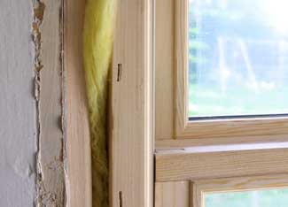
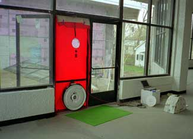
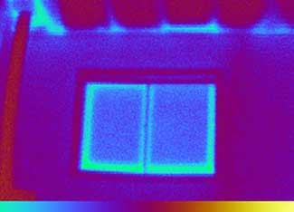

Finding ways to heat and cool your home more efficiently has many benefits. To name a few: Home energy improvements can lower your heating and cooling bills, reduce your carbon footprint and make your home more comfortable. What’s not to love?
But while some energy improvements are cheap (changing your furnace filter), others are expensive (buying a new furnace). And although some of those larger projects may end up saving a lot of energy and money, it’s not always easy to know whether a specific project makes sense for your home, or which projects you should tackle first.
This is where an energy audit comes into the picture. An energy audit can help you decide which projects should be your highest priority, and which ones you might not want to do at all. So what’s involved in a home energy audit, and does it make sense for you?
To answer these questions and more, I talked to a home energy rater, Ken Riead of Hathmore Technologies, LLC in Independence, Mo. Riead does energy audits and has trained other energy auditors and energy raters.
So who should have an energy audit?
Everyone. In fact, new houses typically aren’t as well constructed as the older houses. They can leak more air, causing health and comfort problems, and the quality of the wood and other building components can be poor. Insulation is often very sloppily installed and, in many cases, missing entirely. Most homeowners aren’t knowledgeable about how to look for these problems and how to properly correct them if they find them. Actually, the same problems found in single family homes also occur in duplexes, townhomes, condominiums, apartments and other forms of residences. However, to keep things simple I will use the terms “home” or “residence” from here on.
I would submit that unless your home is an Energy Star home or has undergone energy testing you will likely experience high energy bills and comfort problems, so it is well worth doing an energy audit.
Most electric utilities offer some sort of online survey or audit at little or no cost. That’s where most people start.
What do those online surveys typically involve?
You enter some basics about your home. If you say “well, I think my walls have R-7 insulation,” then the online audit’s automatic response will be something like “OK, you should add more insulation to your walls.” If you state, “My refrigerator is 20 years old,” it will suggest, “Time for a new refrigerator and we at your local power company recommend Energy Star appliances.”
But you have to consider here the old axiom that it’s worth what you pay for it. If energy audits are free, they’re probably not going to be all that helpful. There’s really no substitute for someone visiting your home and verifying the condition of everything. Say your furnace is old, but it’s still just fine. The online software won’t know that. For most people, the next step is to call someone to come out and physically inspect their particular building and equipment.
Don’t some utilities help with the cost of on-site energy audits?
Yes, it used to be they were required to offer energy audits. You called them up, they’d send someone out, either for free or for a nominal fee. But ever since deregulation came along, most utilities shed a lot of these programs under the heading “we have to get lean and mean to survive.” Now some of them are coming back.
What’s happening is that if utilities want to raise their rates they normally need to have an offsetting benefit. If you want more money from rate payers, then what are you going to give in return? So utilities are offering rebates for high efficiency equipment, or they’ll offer help paying for an energy audit.
What’s the typical cost of an energy audit?
Well, as previously mentioned, they can be found free online, or offered through your utility. Of course it varies all over the country, but typically if you want someone to do a walk-through audit you probably are going to pay at least a couple hundred dollars. In the old days, you could probably get it for less than a hundred. But I think with gas prices and everything, you’re probably talking $200 minimum to get someone to come out.
Thorough, professional energy audits run $500 and up for a home. You’re probably looking at $650 or $700 for an energy rating (which can be used to obtain an Energy Improvement Mortgage), and on up.
What should I look for in an energy auditor?
Unfortunately, there has been such a large spectrum of tests and surveys that have been called an “energy audit” that the term has become more generic than specific. So, for a person to get a “quality” energy audit through a skilled energy auditor they will have to conduct a little research and be a little picky.
Ask first whether your local energy auditors are trained and, if so, where did they get their training? This question is important because the quality of the training will help define the quality of the auditor and the audit itself. One national organization offering quality training is the Building Performance Institute or BPI. BPI-trained energy auditors must pass an online nationally administered test and also perform one or more field tests before they are considered qualified. Another national organization involved in training and verification of energy auditors is the Residential Energy Services Network or RESNET. RESNET and BPI work closely together to help ensure the quality and consistency of training of energy auditors and energy raters. Both BPI and RESNET maintain updated lists of trained energy auditors that can be accessed online by anyone.
Also, many local and regional energy providers, such as your electric utility or fossil fuel provider, maintain a list of qualified energy auditors. Other sources of information about energy auditors can be your local nonprofit builders, such as Habitat for Humanity, and your local agencies that provide weatherization services or energy assistance. Once you have assembled your list of trained and qualified energy auditors in your area, it is very advisable to ask them for references (past clients) and proof of insurance. A good auditor will produce happy clients, so don’t skip this step.
What’s involved in an energy audit?
A quality energy audit should always include testing of combustion appliances and combustible gas lines. Those air leaks may have actually been keeping you alive and sealing them up without knowing if your appliances are spilling combustion products could be disastrous. Your audit will also involve measuring the residence and noting the condition of all external features, including the doors and windows. The type, age and expected efficiency of the heating/cooling/water heating equipment should be noted. Other large energy-consuming appliances should also be documented, such as refrigerators, freezers, stoves/ovens, dishwashers and such. Ceiling fans, lights and other obvious energy users should also be noted. Your energy auditor will be all over your attic and basement/crawl space and should perform an air infiltration test to locate leaks and to give you a baseline by which to measure improvements.
Once the data is gathered and analyzed, either by hand calculations or via computer, the energy auditor can then provide improvement and/or replacement suggestions to the homeowner based on a variety of factors: payback, comfort, health, safety or condition.
What kind of tests can an energy auditor do at your home?
Other than the basic arsenal of tools that energy auditors carry, such as a flashlight, clipboard and camera, the most commonly used testing device is a blower door. A blower door is a calibrated fan mounted inside an expandable cloth and frame that can be placed into a door opening and used to pressurize and/or depressurize a building (see Image Gallery for photos). The energy auditor can either determine manually, or by using a computer, the total amount of air that is entering or leaving a building in relationship to the amount of air pressure being applied by the door. This total amount of air that is moving from inside to outside the building indicates the total number of air leaks, cracks, gaps and missing or defective dampers in the building’s shell or envelope. A blower door can help determine the average air changes per hour, or ACH, of a home. The blower door can also be left running in the “cruise” mode so that the auditor can locate the air leaks using his/her hand, a smoke stick or other device.
BPI recommends that the combustion flue gases of open-flame devices be tested for combustion by-products, such as carbon monoxide. Since carbon monoxide is an odorless, tasteless and invisible gas, most people are unaware of its presence unless they begin to experience flu-like symptoms. Testing for carbon monoxide and other gases is always a good idea, especially if you are considering making the residence more airtight.
More advanced energy audits also involve the use of an infrared (IR) camera, also known as a thermal imaging camera. (See Image Gallery.) IR cameras can “see” behind walls if there is a sizable temperature difference between the inside air and the outside ambient air. They can determine if there is missing insulation, significant air leakage areas and can even locate water leaks and moisture behind solid surfaces. This feature is especially helpful in locating water sources that might be contributing to mold, mildew and other fungus growth. The combination of a blower door and IR camera makes it possible to detect problems that otherwise could have gone unnoticed for long periods of time, perhaps not becoming evident until there was serious damage to the structure or significant mold growth.
Other testing devices that an energy auditor might employ include a flow hood for measuring air flow through supply/return registers, exhaust fans and other devices; a digital thermometer for determining air, flue or water temperatures; a sling psychrometer for determining relative humidity; and a mold and/or radon test kit.
Are all of these tests included in most energy audits?
Most energy audits do not involve all the equipment I have mentioned because the more tests involved in an energy audit, the higher the fee. You also will probably find that the more established companies with highly trained staff will, as a rule, charge a higher fee than a beginning auditor. If you have decided that you would like to have an audit performed on your residence, I suggest that you contact your local energy providers to see if they offer rebates or incentives to offset some or all of the cost of the audit. I also predict that the federal stimulus money might be structured to provide some relief toward the cost of energy audits and, possibly, energy improvements. There are federal tax credits available for residential energy improvements. You can learn more about those on the Energy Star website.
What are some of the improvements a home energy audit is likely to recommend?
The areas of highest pressure, where you will experience the majority of heating and cooling losses, are at the highest and lowest points of your house. Your audit will likely have a lot of focus on your ceiling/attic plane. If you have recessed lighting, plumbing and wiring chases, or flue chases that create holes in this barrier, you will be able to save a lot of money by sealing them up. However, they must be sealed correctly using the correct materials to ensure safety. At the lowest areas of your home you will find your rim joist (the area where the floor joists sit on top of your foundation wall) may possibly be insulated, but probably not air sealed. Foam board and foam or foam insulation does a great job of air sealing and insulating this area. The basement or crawlspace ceiling is usually riddled with holes and penetrations that can be easily sealed with foam board and foam. Correcting issues at the highest and lowest points of your home will actually lower the rate of air leakage throughout all levels of your home.
When they start learning about energy efficiency, and looking at energy audits, one of the first things people say is that they’re thinking of buying new windows.
People like the idea of installing new windows. They look good and give the house a face-lift and everyone has heard the ads saying that they can save up to 40 percent in energy costs. The key words that most people miss in those ads are “up to.” During an audit people complain that they feel cold and drafts around their windows. Many times this is due to the installation, not the window itself. Windows are fit into holes cut into the wall called “rough openings.” The area around the window is sometimes stuffed with insulation, but very seldom air sealed. So the insulation does little to prevent the cold air from coming in through the opening around the window. A homeowner can remove the trim around the window and air seal around it using a non-expanding foam or caulk product (they should check with their window company to ensure the product used does not void their window warranty). They can also caulk around the trim, inside and out, to stop the air flow. Curtains help provide comfort as well by blocking radiant energy transfer.
If you have decent windows now, does it pay to replace them? No. They’re not going to pay you back. Double pane windows, or single pane windows that have storms have an average R-Value of 2. Triple pane windows have an average R-Value of 3. The best windows on the market might get up to an R-Value of 7 or more, however they are going to be very expensive. Adding insulation to an uninsulated wall will provide greater benefit (average R-13) over a larger area for less money. If someone wants new windows for the aesthetics, that’s fine. Just don’t assume the energy savings will pay for them.
Is there anything else people should know before scheduling an energy audit?
Take your time and interview potential energy auditors. Make sure they are going to perform safety (combustion and combustible gas) tests as well as energy testing. Make sure you know what equipment they will be using and what you can expect as a result of having the audit performed. Ask them to send you a sample report and ask for references and proof of insurance. Also make sure you are aware of any potential or perceived conflicts of interest such as, are they also in the business of insulating houses or replacing furnaces or windows? You are inviting this person into your home. You should expect a thorough report that meets your needs and you should expect a professional company to help you determine what improvements you need according to your priorities.
Have you had an energy audit performed on your home? Share your thoughts by posting a comment below.
|
 ISTOCKPHOTO/LANICA KLEIN An energy audit can help you determine which home energy improvements are worthwhile for your home. For example, many people consider installing more energy efficient windows, but adding insulation to your home is likely to save more money and energy. |
COURTESY HATHMORE Ken Riead of Hathmore Technologies, LLC in Independence, Mo., does energy audits and has trained other energy auditors and energy raters. |
 COURTESY OF DOE/NREL/ED HANCOCK A blower door test measures air infiltration. |
|
 COURTESY OF DOE/NREL/PAUL TORCELLINI This infrared photograph of a home’s window shows where heat loss occurs. |
|
|